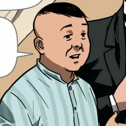
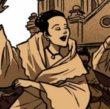
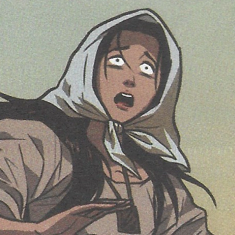
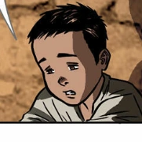

Go to the bottom
| Noli Me Tangere Characters
|
| Note: References can be seen in the pictures and the characters' names. Click each picture and each name to view.
|

-
Kapitan Tiago
- One of the richest people in San Diego
- A high-ranking member in the church: Padre Damaso's "servant"
- Polytheistic: worships saints instead of one god
|
|
|

|
-
Donya Pia Alba
- Wife of Kapitan Tiago though their marriage was short-lived
- Mother of Maria Clara
- Had a rough pregnancy with Maria Clara and eventually died
|
|

|
-
Sisa
- Caring mother of Basilio and Crispin
- Married to an abusive husband and is submissive to him
- Was called crazy for exhibiting extreme behavior in hopes to find her lost sons
|
|

|
-
Basilio
- Eldest son of Sisa
- Works as a sacristan
- Arrived home with a bleeding forehead one night; a bullet fired by a Guardia Civil grazed it
- Eventually goes missing the next day
|
|
|
-
Crispin
- Youngest son of Sisa
- Works as a sacristan
- Was accused of stealing two (2) gold coins by the senior sacristan
- Tortured and beaten up till he died
|